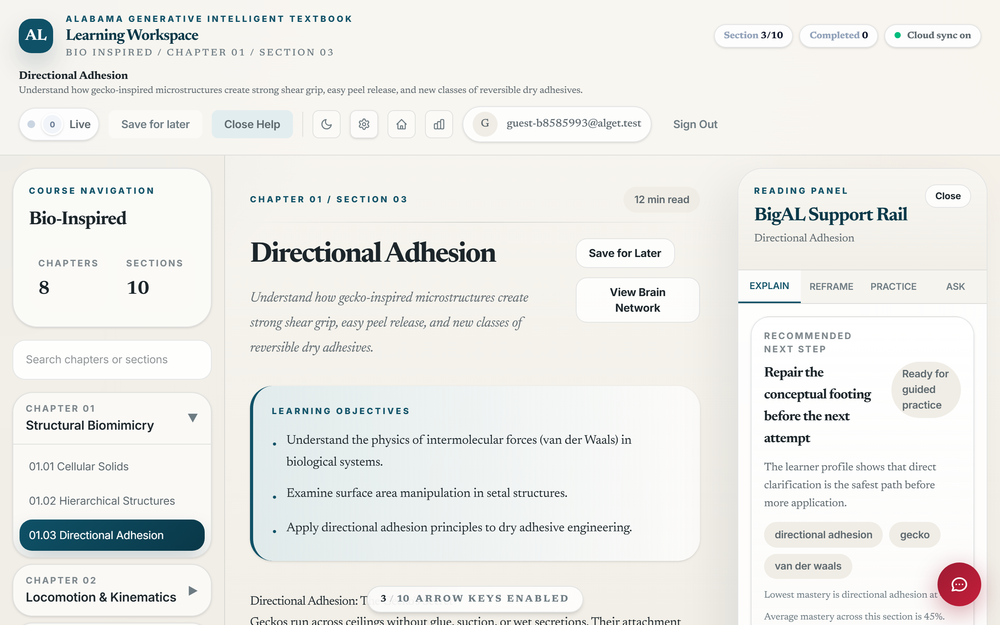
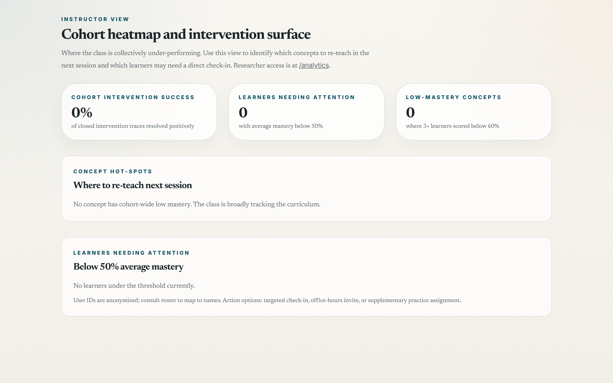
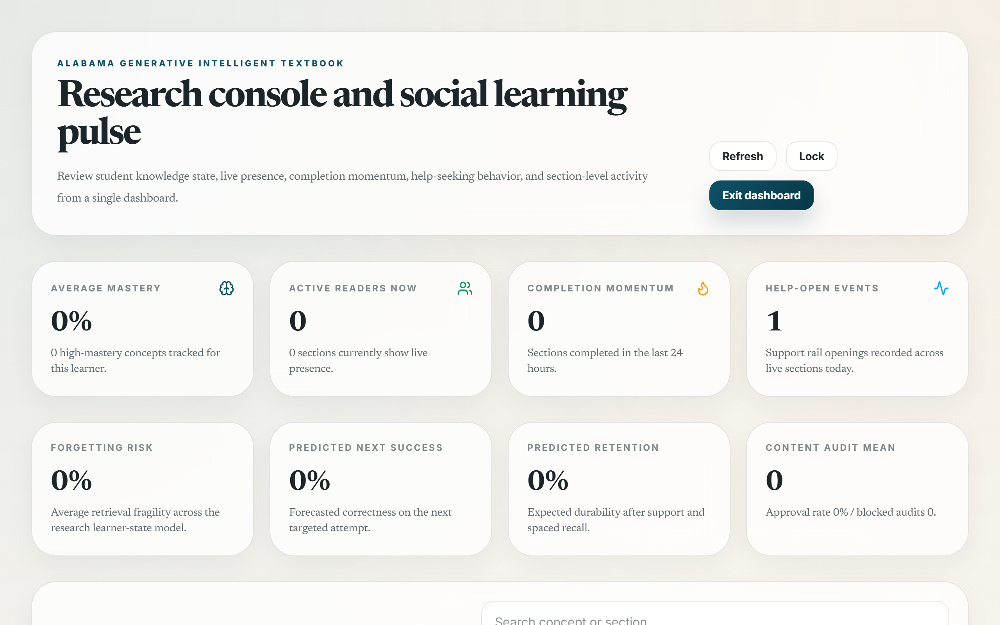

ALGET handbook · Version 2026.04
Instructor Guide
A practical handbook for instructors using ALGET as a teaching partner. The system is a generative intelligent textbook with research-grade telemetry; it works alongside you, not instead of you.
1. Position the System Correctly
ALGET is not an instructor replacement and is not designed to be one. Three roles, three lanes:
- The textbook narrative does the explanation. It is canonical-text-grounded across five courses (Statics, Dynamics, Bio-Inspired Design, Foundations of Instructional Design, AI & Ethics) and authored against Hibbeler / Beer / Smith&Ragan / Gagné / NIST AI RMF / EU AI Act-class references.
- The AI tutor does the in-the-moment scaffold — Socratic guidance, on-demand explanations, generated practice items, simulations and illustrations. It is not allowed to give final answers to assessment items; the system gates that explicitly.
- You do the things only a teacher can do: judgment about who needs which intervention, evaluation of work that does not fit a clean rubric, the sustained relationship that motivates continued effort, and any decision that affects placement, credentialing, or services.
A common failure mode in AI-augmented education is the deference cascade — students defer to the tutor, the tutor defers to whatever the model returned, and the human teacher becomes a logistics manager. The architecture below is designed to keep you in the loop as the teacher, with the system handling the cognitive load that doesn't require your judgment.
2. The Five Surfaces You'll Use
2.1 The course catalog /learn
Where students enter. You can see which courses they have unlocked. Access codes for engineering, education, and researcher scopes are configured on the backend (see DEPLOYMENT_ENV.md). For class deployment, share the appropriate code with the cohort.
2.2 The textbook reader /book/<course>/<chapter>/<section>
Direct link to a section. You can preview anything students can. Use this to validate a section before assigning it; if you spot a defect, flag it through the audit pipeline (Section 8).

//book/<course>/<ch>/<sec>: TOC, narrative + inline checks, intelligence rail, floating tutor (BigAL).2.3 The student dashboard /dashboard
What an individual learner sees about their own mastery. Open one in another browser profile to see what a struggling student is looking at right now. This builds empathy with their experience and helps you point to specific data when you check in.
2.4 The instructor dashboard /instructor
Cohort heatmap. Three panels:
- Cohort intervention success — what fraction of closed interventions resolved positively. A sustained drop signals either content drift or a class-wide gap.
- Learners needing attention — anonymized IDs with mastery below 50%. Cross-reference with your roster to identify who to check in with.
- Concept hot-spots — concepts where 3+ learners are below 60%. These are your re-teach candidates for the next session.
Access is gated by the alget_instructor_access session flag. Unlock at /analytics with the instructor passcode.

/instructor: success metric (left), at-risk learner list (middle), concept hot-spots (right), assignment funnel (bottom).2.5 The researcher dashboard /analytics
For when ALGET is part of an active study. RCT-grade joins of interaction_events × recommendation_decisions × intervention_traces × evaluation_runs(pre/post/retention). If the cohort is part of the dual-panel Cognitive Walkthrough study (CW_Research/, CW_Research_BioEngineering/), this is where to find the artifact for write-up.

/analytics: average mastery, active readers, completion momentum, help-open events, forgetting risk, predicted next success, predicted retention, and content-audit mean.3. Reading the Cohort Dashboard
Three signals to develop intuition for:
3.1 Hot-spot stability
A concept that's hot today but cool by Thursday is normal — students are working through it. A concept that stays hot for two weeks despite multiple attempts is a content defect or a missing prerequisite. Investigate the section's MDX; check if <inline-check> density is appropriate; check whether practice.json items map to misconceptions properly.
3.2 Learner divergence
If 80% of your cohort is doing fine and 20% is below 50%, that's a stratification problem, not a content problem. Different intervention: targeted office-hours invitations, supplementary practice assignments, or a re-diagnostic check (the system supports both pre and retention diagnostics; mid-course re-diagnosis is on the roadmap).
3.3 Intervention acceptance vs. resolution
If learners are accepting interventions (clicking Explain, Reframe, Practice) at high rates but not resolving them positively, the supports aren't landing. Two causes are common:
- The supports are too long or too dense for the moment they appear in. Check the IntelRail's Reframe tab — the visual representation may be missing for the relevant concept.
- The misconception bank is incomplete; the system can't target the actual confusion. Check
*.misconceptions.jsonfor that section.
4. When to Intervene vs. Let the Learner Self-Regulate
A trap: instructors who watch the dashboard often reach in for individual learners more aggressively than the data warrants. Self-Determination Theory predicts this: well-meaning intervention that overrides learner autonomy reduces autonomous motivation over time even if it raises short-term performance.
A workable heuristic:
| Signal | Action |
|---|---|
| Single-session struggle, learner is using rail + chat | Don't intervene. Productive struggle is the design. |
| Two consecutive sessions stalled at the same concept, low engagement | Quick check-in: "I noticed you've been on chapter 3 for a while; want to pair on it?" |
| Stuck pattern across multiple concepts, declining session length | Direct outreach. The system isn't the right tool here. |
| Affect signals (frustration, disengagement) but mastery is fine | Lower-pressure check-in; the issue is motivational, not cognitive. |
The system logs intent and outcome; it doesn't log feeling. Your judgment about a student's emotional state is data the dashboard can't surface.
5. Generative Features You Should Know About
ALGET is a generative intelligent textbook, not just an adaptive one. Five places this affects you:
5.1 Explain / Reframe / Practice generated on demand
Through the rail, the system composes new explanations and new practice items per learner. You don't pre-author these; the multi-agent pipeline (PracticeGenerationAgent + CritiqueAgent) does. Quality gate: the CritiqueAgent reviews the upstream generation against RAG-grounded source material before reaching the learner. You can audit any generative output via the content_audits table or via the AnalyticsDashboard's content panel.
5.2 Multi-agent debate for bio-inspired
Bio-inspired specifically runs Biology → Engineering → ValidationAgent → Tutor with up to two revision passes if the validator scores below 7/10. Validation failures are logged. If you teach bio-inspired, watch the validation_critique field in the orchestrator response — sustained low scores indicate prompt drift.
5.3 Generative Lab /lab
For instructors and researchers only (gated). Uses CurriculumAgent to generate a complete new module (narrative + practice + misconceptions) from a biology + engineering context you supply. Treat output as a draft. Review against the engineering text fidelity rubric (backend/engineering_text_fidelity_rubric.md) before exposing to learners.
5.4 Simulations and illustrations
Through the floating chat, students can request inline simulations and conceptual illustrations. The SimulationAgent generates self-contained HTML/p5.js; it's validated by the Validation Agent for bio-inspired and by the schema-gated rendering pipeline for other courses. Inappropriate simulations should be flagged via evaluateSupportContent (which already runs automatically) or your own content-audit notes.
5.5 Coming: NotebookLM-narrated short lecture clips
See NOTEBOOKLM_REMOTION_INTEGRATION.md for the architecture. Phase 1 pilot is one bio-inspired clip — Directional Adhesion — embedded in bio-inspired/01/03 via Remotion Player. Once production, instructors will be able to request a 60–90 second video lecture for any HIGH-tier topic (see REMOTION_ANIMATION_MAP.md).
6. Privacy, Compliance, Ethics
6.1 FERPA
The system collects educational records (mastery, attempt outcomes, chat history, highlights). All storage is in your institution's Supabase project with row-level security. Vendor data movement is constrained by FERPA's school-official exception; review the institution's data-processing agreement before granting any third-party access.
6.2 COPPA
If your cohort includes any learners under 13, the system requires verifiable parental consent and additional design protections. ALGET can be configured for schools-as-agents-of-parents under the COPPA exception, but the conditions are narrow. Talk to your institution's legal/IRB before exposing the platform to under-13 users.
6.3 IDEA
6.4 Disabled features
server.py:/api/assist/peer_note is now disabled). Any social-presence augmentation must be explicitly labeled as AI per ethical-AI disclosure norms.
6.5 Surveillance vs. monitoring
The system records click-level telemetry. The LXD audit distinguishes monitoring (bounded, learner-visible, opt-out-real) from surveillance (combined, learner-invisible, mandatory). ALGET aims for monitoring. Webcam emotion detection, keystroke biometrics, or any other surveillance-class signals are explicitly off.
7. Pedagogical Alignment Checklist
When you assign a section, run this in 90 seconds:
- Objective fit. Does the section's
learning_objectives(inmeta.json) match what you want students to walk away with? - Bloom level. Does the practice exercise the level the objective claims? An evaluate-verb objective with multiple-choice recall items is a defect.
- Misconception coverage. Does
misconceptions.jsoncover the 2–3 most common errors your past students have made? If not, add them through the misconception bank workflow (planned content authoring tool; for now, edit the JSON directly). - Inline check density. Sections you assign for first reading should have at least 3
<inline-check>items. New sections may not yet — flag for content authoring. - Time budget.
estimated_time_minutesis a planning hint. If your students take materially longer, consider reading the section yourself with a timer and report back through the audit channel.
8. When the System Is Wrong
Three categories of defect, three responses:
8.1 Content defect
A section's narrative says something wrong. Open frontend/content/<course>/<chapter>/<section>.mdx, fix it, commit with a clear message. ALGET ships content as code; it's auditable and version-controlled.
8.2 Generative defect
The tutor produced a wrong answer or inappropriate distractor. The CritiqueAgent should have caught it. If it didn't, the case is research-grade evidence. Capture the section_id, the generative agent name, the input, and the output. File against evaluator_disagreements in the research notes; the next critique-prompt iteration will incorporate the case.
8.3 Pedagogical mismatch
The system's recommendation doesn't fit your teaching strategy. The adaptive engine is opinionated; sometimes it's wrong for your context. Override at the cohort level by adjusting the access code's scope, by editing content_priority_plan.md, or by direct conversation with the development team if you're part of the pilot.
9. Research Participation
If your cohort is enrolled in ALGET's research study (the dual Cognitive Walkthrough described in paper_draft.md), three additional commitments:
- Pre-test, post-test, retention. Don't skip these. The pre-post-retention triangle is the central study measurement.
- Telemetry consent. Verify the cohort has informed consent on the institution's IRB-approved form. If a learner opts out, their telemetry should be excluded; flag the user_id.
- Data export. At study end, export the relevant slice through
researchService.fetchResearchDashboardSnapshotor by direct SQL on the research views (rct_intervention_outcomes,rct_evaluation_gains,rct_user_telemetry_profile).
10. Asking the System Questions Yourself
You can use the floating ChatWidget like a learner does. Two specifically instructor-relevant prompts:
"Summarize where the cohort is stuck this week." The chat will read recent telemetry and produce a paragraph; not as accurate as the dashboard but useful for stand-up notes.
"Give me three discussion-prompt ideas for next class on <concept>." The Tutor (in your domain map) will compose three with rationale.
Your prompts go through the same multi-agent pipeline learners' do. Use this to test what the system is actually capable of in your hands.
11. The Onboarding Tour
A 5-step in-app tour (OnboardingTour) shows on a learner's first visit to any /book/* page. It introduces the reading pane, the rail, the chat, and the brain network. Encourage learners to take it. They can replay it from Settings.
If you want a custom class-specific intro, add a new MDX file at frontend/content/<course>/00/01.mdx with your welcome message and learning-norms. The TOC builder will pick it up automatically.
12. Running a Class for the First Time
Suggested two-week ramp:
Week 0
- Read this guide.
- Open
LEARNER_GUIDE.htmland confirm it matches your expectations. - Run through one full section as a student. Take the diagnostic.
- Verify your access codes work with the deployed instance.
Week 1
- Cohort onboarding session: 30 minutes. Show the OnboardingTour live; demo the rail and the chat. Set expectations: "the tutor won't give you answers; that's by design."
- Assign first diagnostic + first section.
- End-of-week: open
/instructor. Are 70%+ of learners under way? If not, what are the holdouts?
Week 2
- First retention check is due (7 days after pre-test for those who finished a section).
- First check-in conversations with bottom-quartile learners.
- First content-defect report if any has surfaced.
By week 3 you'll have a feel for the cohort's rhythm and the dashboard's signals. From there, the platform becomes background infrastructure and your attention shifts to the parts only you can do.
13. Quick Reference
| Task | Where |
|---|---|
| See cohort heatmap | /instructor |
| Audit a section before assigning | /book/<course>/<chapter>/<section> |
| Generate a new module from a Lab context | /lab (gated) |
| Export research data | /analytics (researcher gated) |
| Reset onboarding for a learner | Settings → Replay tour, or call resetOnboardingTour() from console |
| Validate generative output | Review content_audits rows for the relevant section_id |
| Update access codes | Backend env vars; see DEPLOYMENT_ENV.md |
| Flag a content defect | Edit frontend/content/<course>/<chapter>/<section>.mdx and commit |
The system is opinionated. Some of those opinions you'll agree with — keeping the tutor from giving answers, gating the Generative Lab to instructors, requiring informed consent for telemetry. Some you'll disagree with — the lack of a built-in gradebook, the deferral of mobile/offline, the conservative approach to social features. Tell the development team what's missing for your context. The architecture is built to absorb feedback; that's why it's research-grade.
Good teaching uses tools. ALGET is a tool. Your judgment is still the teaching.
References
- Self-Determination Theory: Deci, E. L., & Ryan, R. M. (2000).
- Universal Design for Learning Guidelines (CAST, 2018).
- Reiser & Dempsey (eds.), Trends and Issues in Instructional Design and Technology, 5th ed., Routledge, 2024.
- ALGET internal:
LEARNER_GUIDE.html,MULTI_AGENT_GENERATIVE_DESIGN.md,REMOTION_ANIMATION_MAP.md,NOTEBOOKLM_REMOTION_INTEGRATION.md,engineering_text_fidelity_rubric.md,paper_draft.md.